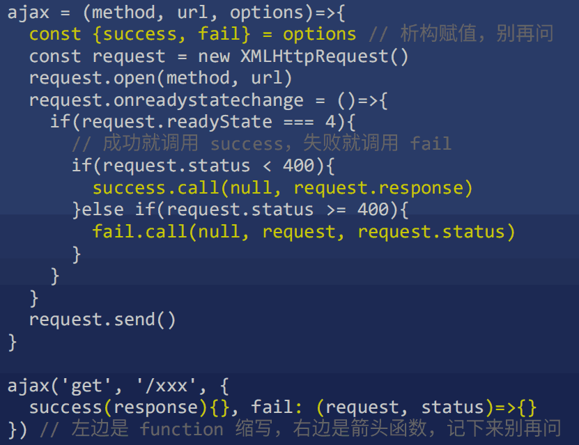
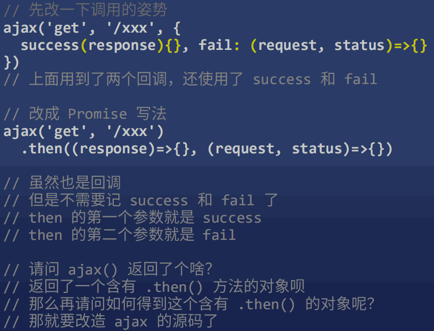
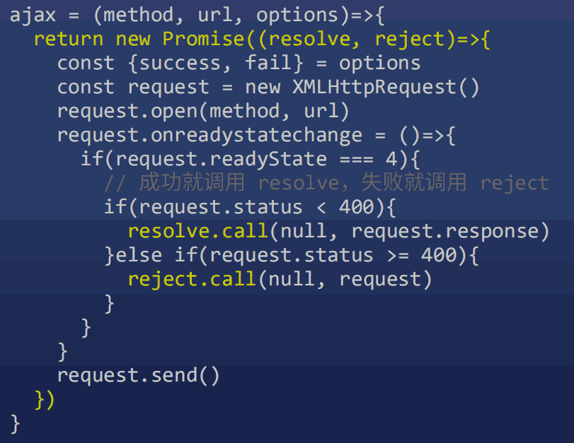
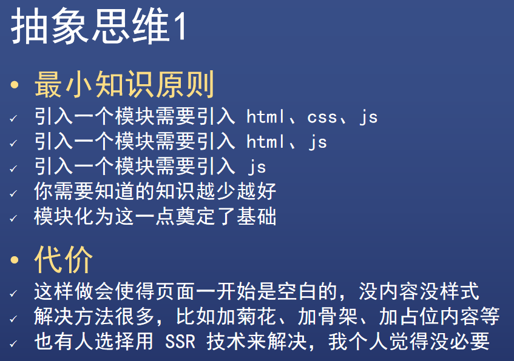
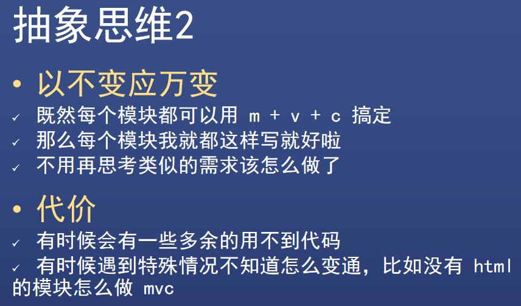
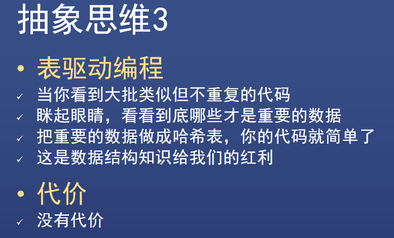
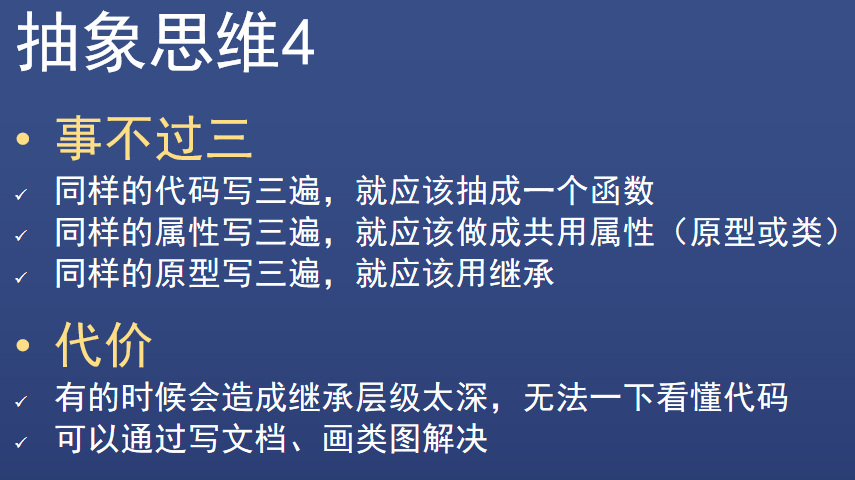
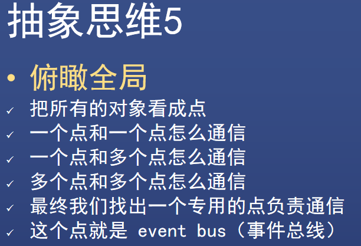
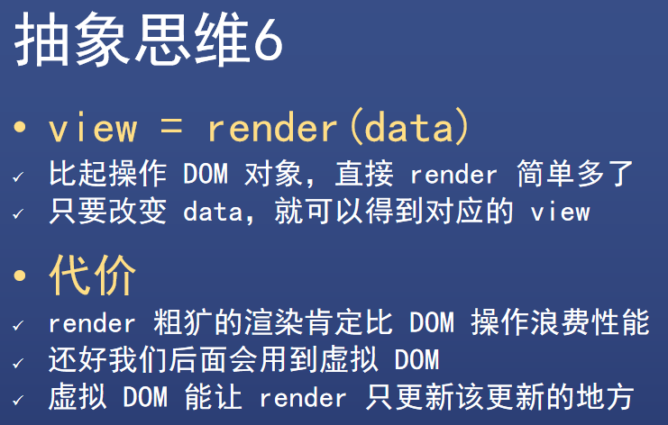

方方-前后端分离
AJAX 的原理¶
如何从 github 复制代码：
- 从最后往前选中部分代码
- 到开头，按 shift + 点选最开始部分
node-dev
google 搜索 -> 进入 github 的 readme
// 安装
yarn global add node-dev
node-dev server.js 8888
- google: xml mdn
JSON
// console 输入，输出错误 "Uncaught SyntaxError: Unexpected token ' in JSON at position 1"
JSON.parse(`{'name':'frank'}`)
let object
try {
object = JSON.parse(`{'name':'frank'}`)
} catch(error) {
console.log('出错了，错误详情是')
console.log(error)
object = {'name':'no name'}
}
console.log(object)
// console
> const obj = { "hi":'ho', fn: ()=>{} }
< undefined
> JSON.stringify(obj)
< "{"hi":"ho"}"
异步与 Promise¶
- google: mdn 析构赋值
什么是异步？什么是同步？
网上的解释经常混淆异步与回调
-
同步：如果能直接拿到结果
比如你在医院挂号，你拿到号才会离开窗口
-
异步：如果不能直接拿到结果
比如你在餐厅门口等位，你拿到号可以去逛街
你可以每 10 分钟去餐厅问一下（轮询）
你也可以扫码用微信接收通知（回调）
异步举例: 以 AJAX 为例
request.send() 之后，并不能直接得到 response
必须等到 readyState 变为 4 后，浏览器回头调用 request.onreadystatechange 函数，我们才能得到 request.response
回调函数：写了却不调用，给别人调用的函数
f2(f1)，可以不写 f1(x) 的 x 参数
异步和回调的关系

判断函数是同步还是异步？
根据特征 或 文档
异步函数：如果一个函数的返回值处于以下的内部
- setTimeout
- AJAX (即 XMLHttpRequest)
- AddEventListener
- 其他 API
傻X前端才把 AJAX 设置为同步的，这样做会使请求期间页面卡住。
摇骰子


面试题
const array = ['1','2','3'].map(parseInt)
console.log(array)
// [1, NaN, NaN]
等同于
const array = ['1','2','3'].map((item, i, arr)=>{
return parseInt(item, i, arr)
// parseInt('1', 0, arr) => 1
// parseInt('2', 1, arr) => NaN 1进制没有2
// parseInt('3', 2, arr) => NaN 2进制没有3
})
console.log(array)
// [1, NaN, NaN]
const array = ['1','2','3'].map((item, i, arr)=>{
return parseInt(item)
})
console.log(array)
// [1, 2, 3]
等同于
const array = ['1','2','3'].map(item=>parseInt(item))
console.log(array)
// [1, 2, 3]
如果异步任务有两个结果，成功或失败，怎么办？


以 AJAX 的封装为例来解释 Promise 的用法

Promise 说这代码太傻了，我们改成 Promise 写法


- resolve 和 reject 会再去调用成功和失败函数
- 使用 .then(success, fail) 传入成功和失败函数
- Promise 还有高级用法，以后说
我们封装的 ajax 的缺点
- post 无法上传数据 (request.send)
- 不能设置请求头 (request.setRequestHeader(key, value))
解决：
- 使用 jQuery.ajax (不用掌握，写篇博客即可)
- 使用 axios (这个库比 jQuery 逼格高)
axios
目前最新的 AJAX 库，抄袭了 jQuery 的封装思路
// 代码示例
axios.get('/5.json')
.then( response =>
console.log(response)
)
axios 高级用法
-
JSON 自动处理
axios 如果发现响应的 Content-Type 是 json
就会自动调用 JSON.parse
所以说正确设置 Content-Type 是好习惯
-
你可以在所有请求里加些东西，比如加查询参数
-
响应拦截器
你可以在所有响应里加些东西，甚至改内容
-
可以生成不同实例（对象）
不同的实例可以设置不同的配置，用于复杂场景
- 初级程序员学习 API（包括 Vue / React 的 API）
- 中级程序员学习如何封装
- 高级程序员造轮子
Promise then, all, race
- Promise 是目前前端解决异步问题的统一方案
- resolve 和 reject 可以改成任何其他名字，不影响使用，但一般就叫这两个名字
- resolve 和 reject 都只接受一个参数
跨域、CORS、JSONP¶
跨域关键知识
-
同源策略
浏览器故意设计的一个功能限制
-
CORS
突破浏览器限制的一个方法
-
JSONP
IE 时代的妥协
同源策略：不同源的页面之间，不准互相访问数据


为了保护用户隐私


解法
-
解法一：CORS 分为 简单请求 和 复杂请求
IE 6 7 8 9 不支持
-
JSONP: 引用 JS，让 JS 包含数据
- qq.com 将数据写到 /friends.js
- frank.com 用 script 标签引用 /friends.js
- /friends.js 执行 frank.com 事先定义好的 window.xxx 函数，获取到数据
Referer
Nerwork -> 选中 XHR -> 点第一个，看 Headers 里的 Referer
Referer 显示 https://www.baidu.com/
chrome 地址栏 按左键显示完整路径
设置 hosts
nodepad 以管理员身份运行 C:\WINDOWS\system32\drivers\etc\hosts，加
127.0.0.1 shawn.com
127.0.0.1 qq.com
在终端
ping shawn.com
ping qq.com
可以访问 http://qq.com:8888/index.html 可以访问 http://frank.com:9999/index.html
百度的 Network 的第一个的 jQuery
能引用 js 但不能读取 js
JSONP 是什么？ 完美回答（优缺点）
在跨域时由于当前浏览器不支持 CORS（因为某些条件），必须使用另外一种方式来跨域。于是我们请求一个 JS 文件，这个 JS 文件会执行一个回调，回调里面就有我们的数据。
回调的名字是可以随机生成的一个随机数，我们把这个名字以 callback 参数传给后台，后台会把函数返回给我们并执行。
优点：
- 兼容 IE
- 可以跨域
缺点：
- 由于是 script 标签，读不到 AJAX 那么精确的状态，不知道状态码是什么、响应头 (header) 是什么。只知道成功 (onload) 和失败 (onerror)
- 只能发 GET 请求，不支持 POST
静态服务器¶
自动查找对应文件，即静态文件服务器
动态服务器 / Ajax 实战：Cookie、Session¶
- 没有请求数据库，就是静态服务器
- 请求了数据库，就是动态服务器
- 程序员应该懂点数据库，今天直接用 json 文件当做数据库
目标
目标 1

目标 2

目标 2 受阻，目标太大了：目标应该尽量小
- 目标 3：标记用户已登录
Cookie (公园门票) 定义
- Cookie 是服务器下发给浏览器的一段字符串
- 浏览器必须保存这个 Cookie (除非用户删除)
- 之后发起相同二级域名请求（任何请求）时，浏览器必须附上 Cookie
有 Cookie 就是登录了，没 Cookie 就没登录
-
目标 4：显示用户名
home.html 渲染前获取 user 信息
如果有 user，则将 {{user.name}} 替换成 user.name
如果无 user，则显示登录按钮
有一个大 bug，用户可以篡改 user_id（开发者工具或者 JS 都能改）
目标 5

Cookie / Session 总结
目标 6

目标 7

总结


Info
$ node test.js
users.json: 保留 []，或用 try...catch...，失败了就变成空
json 里只能写 ""
- JSON.parse(): 反序列化
- JSON.stringify(): 序列化
Application -> Storage -> Cookies
home.html 读 cookie:
- google: nodejs 中文文档
- 里面的 http
为什么经常要加 toString ?
session
Session 保存在服务器的文件中
服务器一般会将 Session id 放到 Cookie 中，发放给浏览器
注销功能一般如何实现
安全起见，不能用 JS 删 Cookie，应该使用 HTTP only 的 Cookie，然后 JS 发请求让服务器删 Cookie
安全起见，除了删除浏览器端的 Cookie，还需要把对应的 Session 数据删掉
MVC¶
yarn init -y
yarn add jquery
// google: parcel vue 完整版，package.json 加 "alias"
yarn add vue
npm init
npm i jquery
- 不要用直接操作 css 相关的 api，如 css(), show(), hide()
-
改成 addClass('active'), removeClass('active')，js 不用管 css 怎么写
-
引入类， 引入继承，路由
-
解耦
-
所有页面都可以使用 MVC 来优化代码结构
- 不学 MVC，只会写业务，不会封装，更不会造轮子
抽象思维





